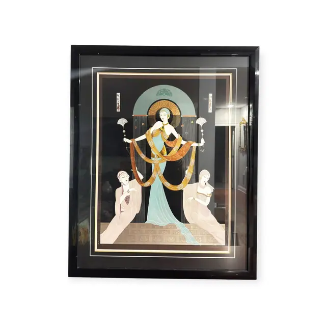
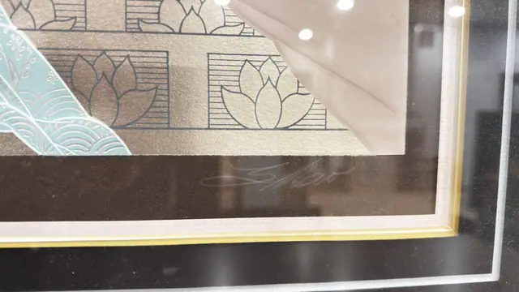
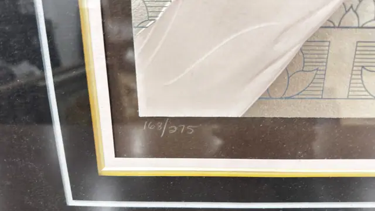
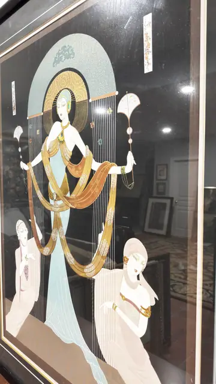

Paintings & Prints
Art Deco Goddess With Two Attendants, Numbered Edition, Framed
Unknown · late 20th century
Price Upon Request




About the Item
A tall symmetrical Art Deco composition. A central figure with a jewelled cap stands before a gilded halo and an arch of pale jade, her long gown falling to a beaded train; she holds out two great swags of gold and copper drapery that loop down to either side. Two kneeling attendants in blush-pink gowns and close caps receive the drapery, one at each corner. Vertical hairline-striped panels rise behind her, hung with small fan and pearl ornaments, and the floor is a gold band of stylised lotus panels. Colour is flat, cool and precisely registered - pale jade, blush, ivory and metallic gold on a matte black ground. Medium: serigraph (screenprint) on paper, with metallic gold ink. Signed lower right of the sheet, in white pencil on the dark border. Edition: 168/275, hand-numbered in white pencil at lower left; hand-signed in white pencil at lower right. Inscribed on the reverse or mount: 168/275. Condition: strong reflections and room reflections across the glazing in every shot; the sheet appears clean, with no foxing, cockling or tears visible through the glass.
Details
- Creator:
- Unknown
- Creation Year:
- late 20th century
- Dimensions:
- Height: 41.5 in (105.41 cm)
Width: 33.75 in (85.72 cm)
outside of frame - Medium:
- serigraph (screenprint) on paper, with metallic gold ink
- Edition:
- 168/275, hand-numbered in white pencil at lower left; hand-signed in white pencil at lower right
- Period:
- 20Th
- Condition:
- Offered in the condition shown in the photographs.
- Reference Number:
- VO-63
- Documentation:
- no certificate photographed; edition number and signature appear on the sheet itself
- Gallery Location:
- 168/275